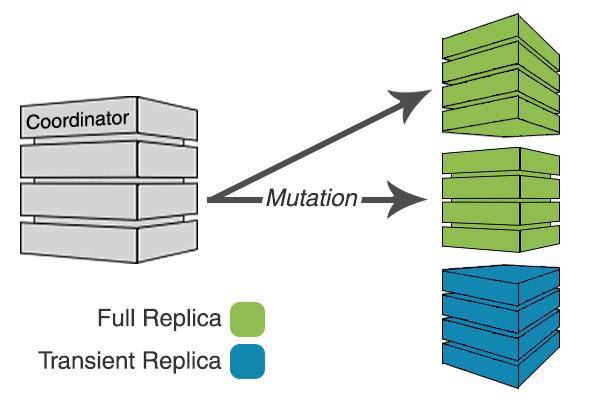

Introducing Transient Replication
December 03, 2018 | The Apache Cassandra Community
« Back to the Apache Cassandra Blog
Transient Replication is a new experimental feature soon to be available in 4.0. When enabled, it allows for the creation of keyspaces where replication factor can be specified as a number of copies (full replicas) and temporary copies (transient replicas). Transient replicas retain the data they replicate only long enough for it to be propagated to full replicas, via incremental repair, at which point the data is deleted. Writing to transient replicas can be avoided almost entirely if monotonic reads are not required because it is possible to achieve a quorum of acknowledged writes without them.
This results in a savings in disk space, CPU, and IO. By deleting data as soon as it is no longer needed, transient replicas require only a fraction of the disk space of a full replica. By not having to store the data indefinitely, the CPU and IO required for compaction is reduced, and read queries are faster as they have less data to process.
So what are the benefits of not actually keeping a full copy of the data? Well, for some installations and use cases, transient replicas can be almost free if monotonic reads are disabled. In future releases where monotonic reads are supported with Transient Replication, enabling monotonic reads would reduce the savings in CPU and IO, but even then they should still be significant.
Transient Replication is designed to be transparent to applications:
- Consistency levels continue to produce the same results for queries.
- The number of replicas that can be lost before data loss occurs is unchanged.
- The number of replicas that can be unavailable before some queries start to timeout or return unavailable is unchanged (with the exception of ONE).
With Transient Replication, you can go from 3 replicas to 5 replicas, two of which are transient, without adding any hardware.
If you are running an active-passive 2 DC setup with 3 replicas in each DC, you can make one replica in each DC transient and still have four full copies of the data in total.
Feature support
Transient Replication is not intended to fully replace Cassandra’s existing approach to replication. There are features that currently don’t work with transiently replicated keyspaces and features that are unlikely ever to work with them.
You can have keyspaces with and without Transient Replication enabled in the same cluster, so it is possible to use Transient Replication for just the use cases that are a good fit for the currently available functionality.
Currently unsupported but coming:
- Monotonic reads
- Batch log
- LWT
- Counters
Will never be supported:
- Secondary indexes
- Materialized views
How Transient Replication works
Overview
Transient replication extends Cassandra’s existing consistent hashing algorithm to designate some replicas of a point or range on the consistent hash ring as transient and some as full. The following image depicts a consistent hash ring with three replicas A, B, and C. The replicas are located at tokens 5, 10, 15 respectively. A key k hashes to token 3 on the ring.

Replicas are selected by walking the ring clockwise starting at the point on the ring the key hashes to. At RF=3, the replicas of key k **are **A, B, C. With Transient Replication, the last N replicas (where N is the configured number of transient replicas) found while walking the ring are designated as transient.
There are no nodes designated as transient replicas or full replicas. All nodes will fully replicate some ranges on the ring and transiently replicate others.
The following image depicts a consistent hash ring at RF=3/1 (three replicas, one of which is transient). The replicas of k are still A, B, and C, but C is now transiently replicating k.

Normally all replicas of a range receive all writes for that range, as depicted in the following image.

Transient replicas do not receive writes in the normal write path.

If sufficient full replicas are unavailable, transient replicas will receive writes.

This optimization, which is possible with Transient Replication, is called Cheap Quorums. This minimizes the amount of work that transient replicas have to do at write time, and reduces the amount of background compaction they will have to do.
Cheap Quorums and monotonic reads: Cheap Quorums may end up being incompatible with an initial implementation of monotonic reads, and operators will be able to make a conscious trade off between performance and monotonic reads.
Rapid write protection
In keyspaces utilizing Transient Replication, writes are sent to every full replica and enough transient replicas to meet the requested consistency level (to make up for unavailable full replicas). In addition, enough transient replicas are selected to reach a quorum in every datacenter, though unless the consistency level requires it, the write will be acknowledged without ensuring all have been delivered.
Because not all replicas are sent the write, it’s possible that insufficient replicas will respond, causing timeouts. To prevent this, we implement rapid write protection, similar to rapid read protection, that sends writes to additional replicas if sufficient acknowledgements to meet the consistency level are not received promptly.
The following animation shows rapid write protection in action.

Rapid write protection is configured similarly to rapid read protection using the table option additional_write_policy. The policy determines how long to wait for acknowledgements before sending additional mutations. The default is to wait for P99 of the observed latency.
Incremental repair
Incremental repair is used to clean up transient data at transient replicas and propagate it to full replicas.
When incremental repair occurs transient replicas stream out transient data, but don’t receive any. Anti-compaction is used to separate transient and fully replicated data so that only fully replicated data is retained once incremental repair completes.
The result of running an incremental repair is that all full replicas for a range are synchronized and can be used interchangeably to retrieve the repaired data set for a query.
Read path
Reads must always include at least one full replica and can include as many replicas (transient or full) as necessary to achieve the desired consistency level. At least one full replica is required in order to provide the data not available at transient replicas, but it doesn’t matter which full replica is picked because incremental repair synchronizes the repaired data set across full replicas.
Reads at transient replicas are faster than reads at full replicas because reads at transient replicas are unlikely to return any results if monotonic reads are disabled, and they haven’t been receiving writes.
Creating keyspaces with Transient Replication
Transient Replication is supported by SimpleStrategy and NetworkTopologyStrategy. When specifying the replication factor, you can specify the number of transient replicas in addition to the total number of replicas (including transient replicas). The syntax for a replication factor of 3 replicas total with one of them being transient would be “3/1”.
ALTER KEYSPACE foo WITH REPLICATION = {'class' : 'NetworkTopologyStrategy', 'DC1' : '3/1'};
ALTER KEYSPACE foo WITH REPLICATION = {'class' : 'SimpleStrategy', 'replication_factor' : '3/1'};
Monotonic reads are not supported with Transient Replication in 4.0, so any existing tables in the keyspace must have monotonic reads disabled by setting read_repair = 'NONE'
Once the keyspace has been altered, you will need to run incremental repair and then nodetool cleanup to ensure transient data is cleaned up.
Operational matters
Transient replication requires rolling incremental repair to be run regularly in order to move data from transient replicas to full replicas. By default transient replicas will receive 1% of writes for transiently replicated ranges due to rapid write protection. If a node is down for an extended period of time, its transient replicas will receive additional write load and that data should be cleaned up using incremental repair. Running incremental repair regularly will ensure that the size of each repair is small.
It’s also a good idea to run a small number of vnodes with transient replication so that when a node goes down the load is spread out over several other nodes that transiently replicate that range. Larges numbers of vnodes are known to be problematic, so it’s best to start with a cluster that is already close to or at its maximum size so that a small number of vnodes will be sufficient. If you intend to grow the cluster in the future, you will need to be cognizant of how this will interact with the number of vnodes you select.
While the odds of any data loss should multiple nodes be permanently lost remain the same with transient replication, the magnitude of potential data loss does not. With 3/1 transient replication the permanent loss of two nodes could result in the loss of the entirety of the repaired data set. If you are running a multi-DC setup with a high level of replication such as 2 DCs, with 3/1 replicas in each, then you will have 4 full copies total and the added risk of transient replication is minimal.
Experimental features
Experimental features are a relatively new idea for Apache Cassandra. Although we recently voted to make materialized views an experimental feature retroactively, Transient Replication is the first experimental feature to be introduced as such.
The goal of introducing experimental features is to allow for incremental development across multiple releases. In the case of Transient Replication, we can avoid a giant code drop that heavily modifies the code base, and the associated risks with incorporating a new feature that way.
What it means for a feature to be experimental doesn’t have a set definition, but for Transient Replication it’s intended to set expectations. As of 4.0, Transient Replication’s intended audience is expert operators of Cassandra with the ability to write the book on how to safely deploy Transient Replication, debug any issues that result, and if necessary contribute code back to address problems as they are discovered.
It’s expected that the feature set for Transient Replication will not change in minor updates to 4.0, but eventually it should be ready for use by a wider audience.
Next steps for Transient Replication
If increasing availability or saving on capacity sounds good to you, then you can help make transient replication production-ready by testing it out or even deploying it. Experience and feedback from the community is one the of the things that will drive transient replication bug fixing and development.
© The Apache Software Foundation under the terms of the Apache License 2.0. Apache, the Apache feather logo, and Apache Cassandra are trademarks of The Apache Software Foundation.